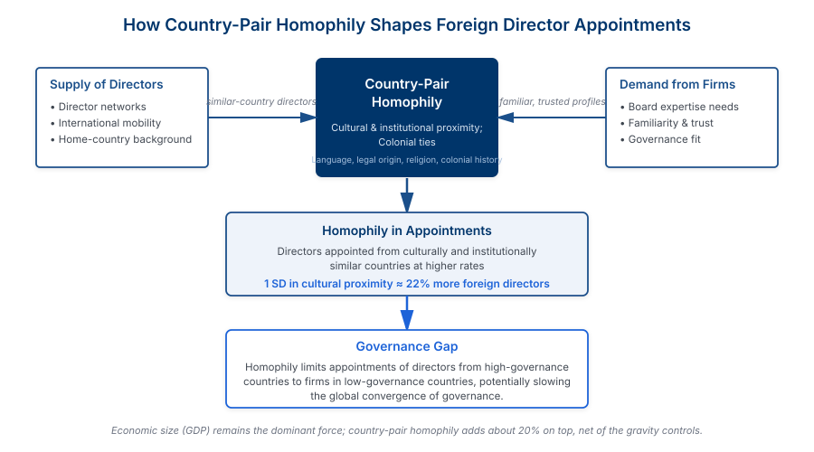

Abstract
We examine patterns of homophily—the tendency to associate with similar others—in foreign director appointments across 38 countries. Using a comprehensive dataset of international board appointments, we investigate whether firms preferentially appoint foreign directors from culturally similar countries and explore the implications of this homophily for board effectiveness and firm outcomes.
Our findings reveal strong homophily patterns: firms are significantly more likely to appoint foreign directors from countries that share linguistic, religious, or colonial ties. This cultural matching is economically meaningful, with cultural proximity increasing appointment probability by 40-60%. We find that culturally similar foreign directors are associated with greater board attendance, more active committee participation, and improved firm performance, suggesting that cultural fit facilitates effective cross-border governance.
Key Findings
Cultural Homophily Patterns
Firms show strong preferences for foreign directors from culturally similar countries, with cultural proximity increasing appointment probability by 40-60%.
Global Network Effects
Cultural homophily creates distinct global governance networks, with directors clustering along linguistic, religious, and historical colonial connections.
Performance Benefits
Culturally matched foreign directors show higher engagement (better attendance, more committee work) and are associated with improved firm performance.
Trade-offs
While cultural fit improves effectiveness, it may limit diversity of perspectives and perpetuate existing governance networks rather than bringing fresh viewpoints.
Empirical Results

Our gravity model results reveal that cultural and institutional proximity are significant determinants of foreign director appointments, even after controlling for economic factors like GDP and bilateral trade. Cultural proximity shows the strongest effect, with an elasticity of +0.47, implying a 40-60% increase in the probability of appointing a foreign director from a culturally similar country. Common legal origin and colonial history also significantly predict director appointments, with elasticities of +0.36 and +0.31 respectively.
Importantly, we find that the strength of homophily effects varies systematically by governance context. In countries with weak institutional quality, the effect of cultural proximity is substantially larger (+0.62) compared to strong governance countries (+0.28). This suggests that firms rely more heavily on cultural cues when formal institutional safeguards are limited. Despite globalization and increasing international trade over our sample period (2000-2013), the homophily effect remains stable, indicating that cultural factors continue to shape cross-border board appointments regardless of overall increases in foreign director prevalence.
Conceptual Framework & Mechanisms

The mechanism underlying our results operates through both supply and demand channels. On the supply side, directors are more likely to seek opportunities in culturally familiar markets where they can leverage existing networks and language skills. On the demand side, firms find it easier to evaluate and trust directors from culturally similar countries, as they share similar governance frameworks, business practices, and communication styles.
This cultural matching facilitates director effectiveness in several ways. Directors from culturally similar countries show better attendance at board meetings, take more active roles in committees, and are more likely to participate in board discussions. These behavioral differences translate into measurable firm performance improvements. However, the mechanism also reveals important trade-offs: the same cultural proximity that improves director engagement may reduce the diversity of perspectives on the board, potentially limiting the board's ability to challenge management groupthink or identify blind spots in firm strategy.
Research Contribution
This paper contributes to our understanding of how cultural factors shape corporate governance in global markets. First, we provide systematic evidence that cultural homophily extends to boardroom appointments, documenting that the "birds of a feather" principle operates even in professional contexts where meritocracy might be expected to dominate.
Second, we show that this homophily has real consequences for board functioning and firm outcomes. The positive association between cultural match and director effectiveness suggests that cultural fit facilitates communication and collaboration, though it may come at the cost of reduced cognitive diversity.
Third, our findings have implications for understanding international business networks and the globalization of corporate governance. The clustering of cross-border appointments along cultural lines suggests that governance globalization follows predictable cultural patterns rather than creating fully integrated global governance markets.